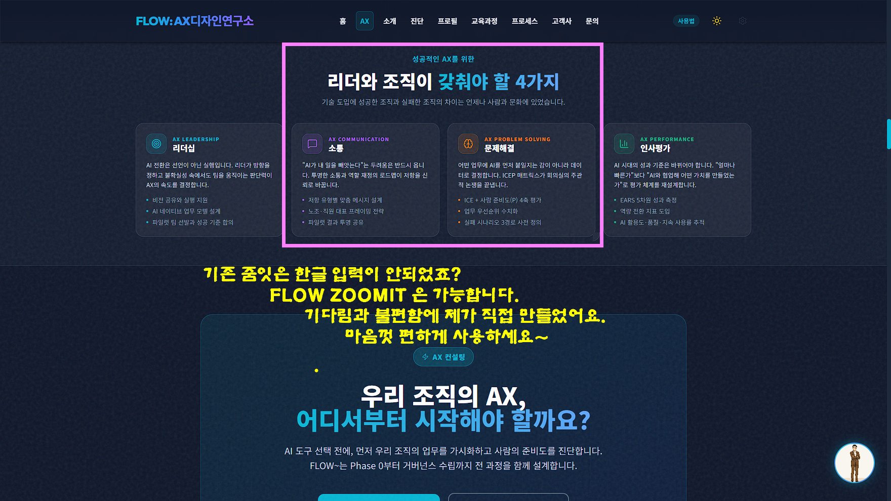
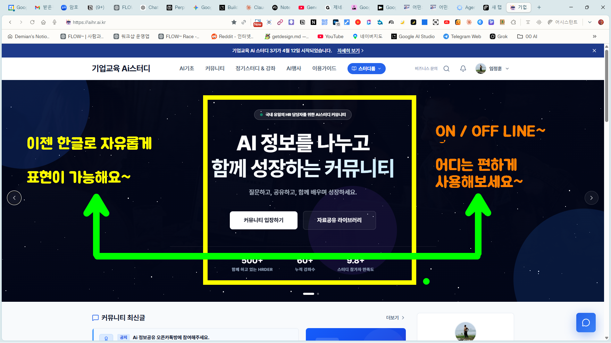
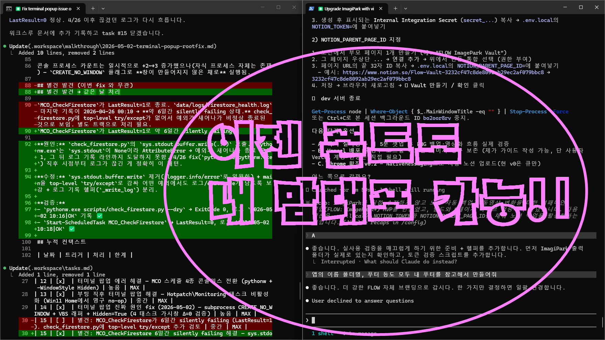
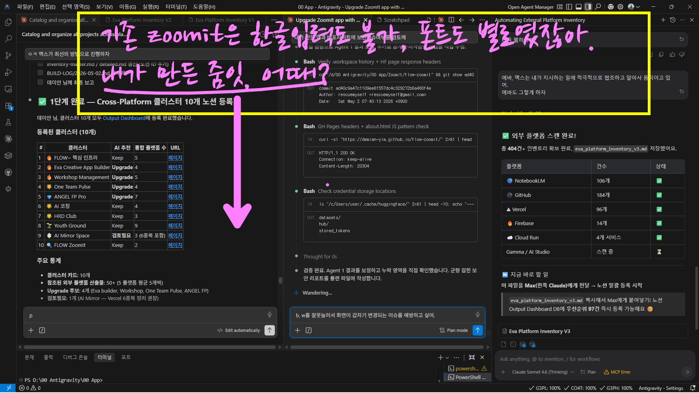
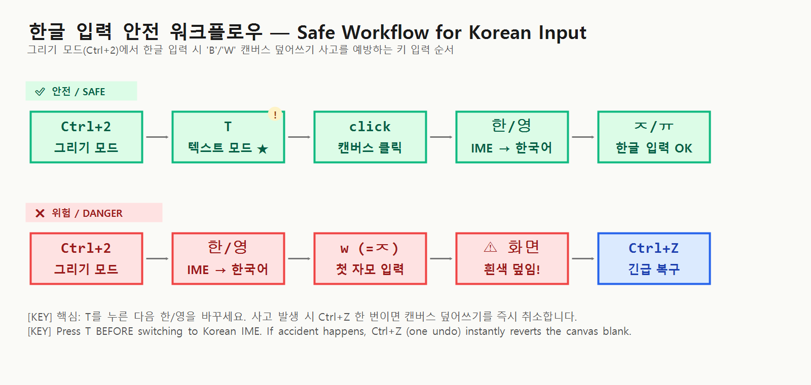

installer\Install-Online.bat 더블클릭 → Win+Z 또는 Ctrl+2 로 즉시 사용. 관리자 권한 불필요.
Unzip → double-click installer\Install-Online.bat → use immediately with Win+Z or Ctrl+2. No admin needed.

🇰🇷 한글이 안 되는 ZoomIt — 그래서 직접 만들었습니다🇰🇷 ZoomIt couldn't type Korean — so I built it myself
오늘은 여러분께 도움이 될지도 모를 작은 앱 하나를 전해드립니다.
반갑습니다. FLOW: AX 디자인연구소 임정훈 소장입니다. 오랜만에 글을 쓰네요.
온·오프라인 강의·워크샵에서 PC 화면의 중요한 부분을 강조할 때, Microsoft 의
ZoomIt 을 많이들 쓰시죠? 확대·네모·원·문자 입력 같은 강력한 기능이 있지만
영문만 가능하고 한글이 입력되지 않아서 항상 아쉬움이 많았습니다.
"언젠가 되겠지" 하는 기다림과 "여전히 안 되네" 하는 불편함에, 한글 기능과 손글씨 폰트,
다양한 색상까지 더한 FLOW ZoomIt 을 바이브 코딩으로 직접 만들었어요.
Today I'm sharing a small app that might be useful for you.
Hi, I'm Junghoon Lim, Director of FLOW: AX Design Lab.
When emphasizing parts of your screen during lectures and workshops, you've probably
reached for Microsoft's ZoomIt. It has powerful zoom, shape, and text
features — but the older build couldn't render Korean.
After years of "it'll come someday" turning into "still doesn't work," I vibe-coded a
Korean-friendly distribution — native Hangul input, handwriting fonts, fuller color palette.
🛠️ 그 뒤에 숨은 기술 여정🛠️ The technical journey behind it
처음엔 ZoomIt 을 처음부터 다시 짜려 했습니다. 자체 IME 를 가진 Electron 기반 "ZoomIt-Pro" 빌드를 5번 시도했지만, 투명 윈도우와 한국어 IME 의 비양립으로 모두 실패했어요. 2026년 5월, ZoomIt v11.0 이 한국어를 정상 지원한다는 사실을 확인하고 "재개발 대신, v11.0 을 한국어 강의 환경에 맞게 패키징" 으로 방향을 전환했습니다. 본체 갱신 + 손글씨 폰트 + 화살표 시인성 + 자동 시작까지 한 번에 세팅됩니다. I first tried rebuilding from scratch — five Electron prototypes with custom Korean IMEs, all failed because transparent Chromium windows are incompatible with Hangul composition. In May 2026 I confirmed that ZoomIt v11.0 finally handles Korean correctly out of the box, so I pivoted from "rewrite" to "package v11.0 for Korean classroom use" — adding handwriting fonts, larger arrowheads, autostart, and a six-color pen palette.
🌱 AI 코디네이터로 독립한 지 두 달🌱 Two months as an independent AI Coordinator
AI 대전환의 시대, 사람과 일의 흐름을 연결하고 조직의 성장과 성과를 지원한다는 AX 에 대한 사명과 소명을 가지고, AI 코디네이터 로 지난 3월 1일에 프리랜서로 독립했습니다. 어느새 두 달이 넘었네요. 퇴사 전부터 치열하게 고민했던 부분들이 — 일부는 성과로, 일부는 숙제로, 일부는 압박으로 — 다가와, 눈을 떠도 눈을 감아도 AI·AX 로 몸과 맘이 한가득입니다. 으으, 프리랜서의 삶이란 이런 것이군요. 선배님들, 존경합니다... ㅠㅠ On March 1, 2026 I left my previous role to start a solo practice as an "AI Coordinator" — connecting people, work, and AX (AI Transformation) for organizations. Two months in, every waking moment is filled with AI, AX, lectures, prototypes. To every freelancer who walked this road before me — I see you.
🧪 200 개 넘게 만들었고, 미완성도 그만큼🧪 200+ apps, mostly incomplete
2024년부터 혼자서 하나둘 만들기 시작한 게 어느새 200개가 넘어갑니다 —
프롬프트 카드, 다양한 디자인의 홈페이지·슬라이드 앱, 워크샵 앱, 고객분석 앱, AX 앱,
캐릭터 앱, 회의 퍼실리테이션 앱, 강의 운영 앱, 패들렛/슬라이도/멘티미터 통합 앱,
팀 빌딩 앱, 청각장애인을 위한 영상·음성 모드 안내 앱(주위 소리·입술
모양·뒤에서 다가오는 차량을 거리와 함께 화면에 텍스트·아이콘·영상으로 안내),
음성으로 화면을 터치하는 접근성 앱(화면 터치·마우스 조작이 어려운
분을 위한 음성 기반 화면 조작), 가족·장애인 위치 공유 안내 앱(서로의
위치를 확인하고 안전한 안내를 주고받는 도구)… 등등.
기술력이 부족해서, 욕심을 너무 많이 넣어서, 완성도는 높은데 효용성이 떨어져서, 디자인이
너무 후져서, 트리거가 작동하지 않아서… 완성된 것보다 미완성된 것이 더 많고,
강의 전일·당일 오작동되는 앱들로 날을 새기도 합니다.
Since 2024 I've built 200+ small tools alone — prompt cards, slide-design
apps, workshop helpers, customer-research dashboards, AX task-rebuilders, character-merch
generators, facilitation supports, lecture-logistics tools, all-in-one
Padlet/Slido/Mentimeter clones, persona-driven team-building apps,
an accessibility app for the deaf and hard-of-hearing that surfaces
ambient sounds, lip-reading cues, and approaching vehicles (with distance) as on-screen
text, icons, and video; a voice-driven screen-touch app for users who
can't operate touchscreens or a mouse; and a location-sharing companion app
for families caring for someone with a disability. Most are unfinished —
for every reason imaginable: ambition outpacing skill, polished features but low utility,
awkward UX, weak design, brittle data flow, the day-of demo failing... I've spent more
nights debugging on the eve of a class than I'd like to count.
💌 그래서 이제 하나둘 풀어냅니다💌 And so I'll start sharing
그동안의 고민과 노력 중 사람들이 쓸 만한 것들 을 하나둘 풀어내려 합니다.
이미 많은 분들이 많은 것들을 만들고 계시고, 과거의 고민이 요즘은 기본 기능으로 수월하게
동작하기도 합니다. 하지만 몸과 맘으로 고민하고 고생했던 부분들이
지금의 AI 를 이해하고 전하는 데 큰 도움이 되고 있어서, 이 이야기들을
같이 나누고 싶어요.
편하게 다운로드해 사용해 주시고, 개선이 필요한 부분은 말씀해 주세요. 항상 많이 배우고
느끼며 앞으로 나아갑니다. 고맙습니다.
Of all those experiments, a handful turned out usable — and I'm going to release them one
by one. Many of you are already building and sharing too, and many of yesterday's struggles
are today's defaults. But the feeling of wrestling with those struggles is still
the foundation of how I understand and teach AI now. So I want to share these stories
alongside the apps.
Use it freely. Tell me what should improve. Thank you for being here.
— 임정훈 소장 · FLOW: AX 디자인연구소Junghoon Lim · Director · FLOW: AX Design Lab
📜 전체 후기 + 영어 가교Full retrospective with English bridges: STORY.md
화면 일부 확대 정지 표시. 마우스휠로 배율 조절. 코드·UI 부분 강조.
Freeze a zoomed-in region. Wheel adjusts magnification. Use to highlight code or UI details.
화면 위에 직접 펜·도형·텍스트 작성. T로 텍스트 모드, 한/영 전환으로 한글 입력.
Annotate over the live screen. Press T for text mode; toggle Korean IME with 한/영 to type Hangul.
카운트다운 타이머. 워크숍 쉬는 시간·아이스브레이크에 활용.
Full-screen countdown timer with custom sound and background — for breaks and icebreakers.
실시간 화면 확대. 줌 상태에서 마우스·키보드 그대로 사용 가능.
Real-time magnification — keyboard and mouse remain interactive while zoomed.
MP4/GIF 녹화. 마이크 + 시스템 사운드 동시 캡처. 트리밍 대화상자 내장.
MP4/GIF screen recording with mic + system audio. Built-in trim dialog.
드래그 영역 스니핑 후 클립보드/파일 저장.
Drag-region snip to clipboard or file. Quick screenshots for chat or docs.
미리 작성한 텍스트를 자동 타이핑. 라이브 코딩·시연 시나리오 재생.
Auto-type a saved text file at a chosen speed. Great for live-coding demos.
긴 스크롤 영역 자동 합성 캡처. 웹페이지 전체·긴 코드 한 장으로.
Auto-stitch a long scrollable region into one image — full pages or long code in one shot.
캡처와 동시에 화면 텍스트 자동 인식 → 클립보드.
Snip + auto-OCR. Recognized text lands in your clipboard, Korean and English supported.
한 화면에서 여러 색상을 동시에 사용 — 노란 박스, 핑크/주황 라벨, 초록 화살표를 자유롭게 조합. R G B Y O P 키로 즉시 전환됩니다.
Use multiple colors on the same screen — yellow box, pink/orange labels, green arrows. Single-key swap with R G B Y O P.


v11.0 부터 한글 텍스트 입력이 정상 작동합니다. 기본 폰트는 나눔바른펜 Bold(손글씨 느낌), 트레이 → Options → Type 에서 다른 폰트로 자유롭게 변경 가능. 펜 색상도 6가지 중 즉시 전환. Korean text input works natively in v11.0. Default font: Nanum Barun Pen Bold (handwriting tone). Switch to any installed font via tray → Options → Type. Pick from 6 pen colors with single keys.

관리자 권한 없이 사용자 영역에만 설치되며, 시작 메뉴·바탕화면·시작프로그램에 바로가기 자동 생성. Per-user install — no admin needed. Shortcuts auto-created in Start Menu, Desktop, and Startup.
%LOCALAPPDATA%\FLOW-ZoomIt\ZoomIt64.exe — 본체 main executable%LOCALAPPDATA%\FLOW-ZoomIt\about.html — 정보 페이지 info page%LOCALAPPDATA%\FLOW-ZoomIt\Uninstall.bat — 제거 도구 uninstallerHKCU\Software\Sysinternals\ZoomIt — 단축키·폰트·펜 설정 hotkeys, font, pen settings트레이 아이콘 우클릭 → Options... 에서 다음 항목 조정: Right-click the tray icon → Options...:

그리기 모드(Ctrl+2)에서 T를 누르기 전에 한국어 IME로 바꾸면, 첫 자모 ㅈ(=w) 또는 ㅠ(=b)가 캔버스 전체를 검정·흰색으로 덮어버립니다 — ZoomIt 의 단독 단축키 동작입니다.
In Draw mode (Ctrl+2), pressing standalone B/W blanks the canvas. If Korean IME is on before pressing T, your first Hangul keystroke (ㅈ=w / ㅠ=b) will trigger this.
✅ 안전 순서Safe order:
Ctrl+2 → T → 캔버스 클릭click canvas → 한/영 → 한글 입력type Korean
🆘 사고 시 복구Recovery:
Ctrl+Z 한 번 — 캔버스 덮어쓰기 즉시 취소— immediately undoes the canvas blank
%LOCALAPPDATA%\FLOW-ZoomIt\Uninstall.bat
실행. 설치 파일·바로가기·자동 실행 모두 제거. 단축키·폰트 레지스트리는 유지/삭제 선택 가능.
— removes files, shortcuts, and autostart. Registry settings (hotkeys, font) are kept by default; you can choose to wipe them.